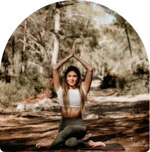
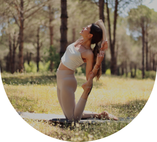

Про автора
Я є сертифікованим йога інструктором з глибокими знаннями і широким досвідом у галузі йоги та медитації.
Останні 6 років я присвятила своїй особистій практиці йоги, перетворивши свою пристрасть у професію та місію допомагати іншим.

Мій шлях до йоги почався з пошуку методів самопізнання та засобів для покращення власного здоров'я та благополуччя. Після першого заняття я відчула помітні зміни не тільки у своєму тілі, яке нарешті почало відпускати напругу, але й у свідомості. З того часу йога стала невід'ємною частиною мого життя.
За 2 роки викладання, я успішно поділилася своїм досвідом і знаннями з сотнями учнів онлайн, допомагаючи їм знайти внутрішню гармонію, покращити фізичне здоров'я, та відкрити для себе глибокі аспекти йоги.

Я вірю у те, що йога - це не просто фізичні вправи, а шлях до здорового та гармонійного життя. Вона підкреслює важливість зв'язку між тілом та розумом – демонстручи, що перше неможливо без другого, та використовує підхід, що базується на концентрації та самосприйнятті.
В цей непростий час я прагну допомогти якомога більшій кількості людей відновити зв'язок з собою, подолати стрес та емоційне навантаження.
Хочу надихнути своїх учнів на щоденну практику йоги, щоб вони змогли створити фундамент для гармонійного життя, а також відчувати себе повноцінним та здоровим.